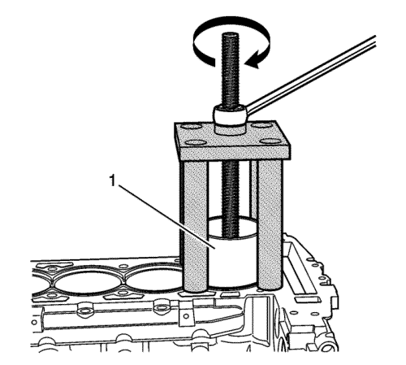

Atención: No enfríe ni caliente el casquillo del calibre del cilindro o del bloque motor al desmontar o montar un nuevo casquillo del calibre del cilindro. Al enfriar o calentar el casquillo del calibre del cilindro o del bloque motor, se dañará el motor y no ayudará al desmontaje o montaje del nuevo casquillo del calibre del cilindro.
Atención: No dañe los muñones de la varilla de unión del cigüeñal ni el anillo reluctor, de lo contrario, se producirán daños en el motor.
- Si el cigüeñal sigue instalado, gírelo de modo que el contrapeso esté en el lado derecho y el muñón de la varilla de unión en el lado izquierdo y no está alineado con el calibre del cilindro
- Monte el extractor del casquillo del calibre del cilindro (1) EN-45680-882 a través del calibre del cilindro.
Atención: Asegúrese de que la zapata está plana contra la parte inferior del casquillo del calibre del cilindro y que no se producirán daños en el extractor del casquillo del calibre del cilindro.
- Alinee la zapata (1) del extractor del casquillo del calibre del cilindro EN-45680-882 en la parte inferior del casquillo (117) del calibre del cilindro.

- Sujete hacia arriba la barra roscada del extractor del casquillo del calibre del cilindro EN-45680-882 para retener la alineación de la zapata en la parte inferior del casquillo del calibre del cilindro.
- Monte el equipo (4) EN-456850-851 en la barra roscada del extractor del casquillo del calibre del cilindro EN-456850-882 y en el bloque del motor.
- Monte el cojinete (3) y la tuerca (1).
- Apriete la tuerca (1) en el cojinete (3).
Precaución: Consulte Precaución con las fijaciones en la sección Prólogo
Nota: Utilice cuatro pernos de culata antiguos como pernos de sujeción.
- Monte los 4 pernos de sujeción (2) en los orificios del perno de la culata del bloque y apriete a 15 N·m (11 lib. pie).

- Gire la tuerca hacia la derecha para retirar el casquillo (1) del calibre del cilindro.

Atención: No dañe la superficie del bloque motor. Los daños en la superficie del bloque motor pueden ocasionar un fallo en el motor.
- Desmonte el equipo EN-45680-851, el extractor del casquillo del calibre del cilindro EN-45680-882 y el casquillo (117) del calibre del cilindro del bloque motor.
- Suelte la tuerca (1) para retirar el casquillo (117) del calibre del cilindro.
- Compruebe si el calibre del cilindro en el bloque motor tiene grietas o está dañado. Si está roto o dañado, sustituya el bloque motor.
- Revise el pistón, los bulones y la biela en busca de daños. Consultar Limpieza e inspección de pistones, bielas y cojinetes .